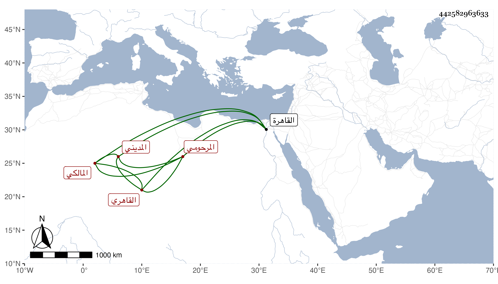

0902Sakhawi.DawLamic.ITO20230111-ara1.EIS1600.442582963633
Biography ID: 442582963633
أحمد بن حسين بن علي الشهاب المرحومي الأصل الأشموني المولد القاهري المديني المالكي الآتي أبوه . ولد تقريبا سنة ثلاث وأربعين وثمانمائة بأشمون وانتقل به أبواه إلى القاهرة فقطنوها تحت نظر الشيخ مدين ، وحفظ القرآن والرسالة والمختصر وألفية النحو وعرض على العلم البلقيني وابن الديري وابن الهمام وابن قديد والبدر البغدادي وأبي القسم النويري وطاهر وغيرهم في الفقه والعربية والفرائض ونحوها وكذا قرا في التسهيل وابن عقيل على يحيى الدماطي وأذن له وعلى ابن قاسم في التوضيح لابن هشام وسمع عليه في العربية وغيرها غير ذلك وصحب الشيخ مدين وكان أبوه خادم زاويته وخطب بها وتكسب بالنساخة وتعليم الأبناء وقرأ علي الشفا والكثير من صحيح البخاري واليسير من مسلم وأبي دواد ومن الترغيب وفي البحث قطعة من شرح النخبة ولازمني في أشياء حتى قرأ علي من تصانيفي السر المكتوم واليسير من ارتياح الأكباد وكتبهما بخطه بل سمع الكثير من البخاري على أم هانئ الهورينية وبعضه على الجلال بن الملقن والشهاب الحجازي وغير ذلك مما ضبطته وهو من الخيار المقلين ، وحج في سنة سبع وتسعين ورام المجاورة في التي بعدها فعرض له ضعف شديد فرجعت به زوجته .
